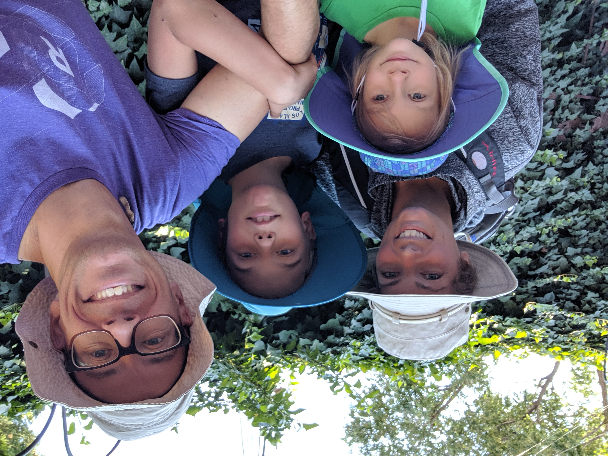

Megan Shepston Overly
Mom. Yogi. Choreographer. Volunteer.
We are riding one hundred miles in the Pelotonia in the fall of 2021!
Would you like to support us? Click here.
Hi, I'm Megan. I'm a mom of two fantastic humans and one loveable fur baby. We are homeschoolers, new as of COVID, with an eye toward becoming worldschoolers in the upcoming year. We currently reside just outside Columbus, Ohio. My partner is Tim, another fantastic human, who is also a rockstar technologist. I am a lover of all things musical theatre--used to perform, am currently a choreographer, and love to play the piano and sing.
I have a hefty movement background as a professional ballerina, an avid yoga practitioner, and a teacher of both dance and yoga. Yoga has been part of my life since 2006, but my practice has evolved in breadth and intensity, both on and off the mat, since I completed yoga teacher training in 2016. I love attending retreats, meditating on the mysteries of the universe, and treating secular texts as sacred.
Oh yeah, and I went to law school. I graduated in 2010, worked at a big law firm for five months, quit, and never went back. Not on purpose. Life just happened.